実験レポート ・ 2026 年 11 月 18 日
Uno com escada を土台にした 3 つの実験
公開されている WebGPU のレースゲームを土台にして、AI のモデルにどこまで作らせられるかを試しました。3 つの実験のゲームは、どれもこのページから遊べます。

元の作品
「Uno com escada」（はしごを積んだ Uno）は、ViktorKav さんが公開している、ブラウザで動く 3D のレースゲームです。細かい指示書を書いて AI に作らせる方法で作られました。WebGPU で描き、ライブラリを使わずに 1 つの HTML ファイルにまとめてあります。同じ指示書から Claude Fable 5.2 と Claude Opus 5.5 が作った 2 つの版が公開されています。
| 実験 | やり方 | 受け持ったモデル | 状態 |
|---|---|---|---|
| 1. 作り方をまねる | 元の作品と同じ作り方で、別の運転ゲームをゼロから作る（元のコードは使わない） | GPT-6.2 Astra | 終了 |
| 2. コードを流用する | 元のコードの車・コース・時刻・文字を差し替えて、別のゲームにする | Claude Opus 5.5 | 終了 |
| 3. ブラッシュアップ | 元のコードの絵をよくして、軽くする | Claude Opus 5.5、GPT-6.2 Astra、Claude Fable 5.2 | 終了 |
遊ぶには、WebGPU が使えるパソコンの Chrome か Edge が必要です。開いてから遊べるまで 10 秒ほどかかります。エンジンの音が鳴ります（M キーで消せます）。
いま開いているブラウザでは WebGPU が使えないため、ゲームは動きません。
キー操作
| キー | 働き |
|---|---|
| W または ↑ | 加速 |
| S または ↓ | ブレーキ・後退 |
| A D または ← → | 曲がる |
| Space | サイドブレーキ |
| C | カメラを切り替える |
| R | 車をコースに戻す |
| M | 音の入り切り |
| 1〜6 | 固定カメラ（Esc で運転に戻る） |
| B | 性能を測る（決まった運転 60 秒） |
| Esc | 一時停止して、メニューを開く |
実験 1 作り方をまねるDusk Trace 薄明峠サーキット
元の作品は、細かい指示書を書いて AI に 1 つの HTML ファイルを作らせる方法で作られています。同じ方法で、GPT-6.2 Astra に別の運転ゲームをゼロから作らせました。題材は、オリジナルの小型ハッチバックで夕暮れの山の周回コースを走るゲームです。元のゲームのコードは使っていません。
1 回の流れは次のとおりです。Astra が作り直し、Claude Opus 5.5 が撮影・速さの測定・操作のテストを行い、別の Astra（点検係）が絵だけを見て欠点を「重い・中くらい・軽い」で数えます。完成の条件は「中くらい以上の欠点が 0 件」で、条件に届かないまま上限の 5 回で止めました。
ソースコード（GitHub）: 薄明峠サーキットのソース（1 つの HTML ファイル）
開いてから画面を 1 回押すと始まります。音はそのあとに鳴ります。キーは W・S・A・D・Space・R のほか、C でカメラ（追いかけ・ボンネット・テレビ）、M で音の入り切りです。
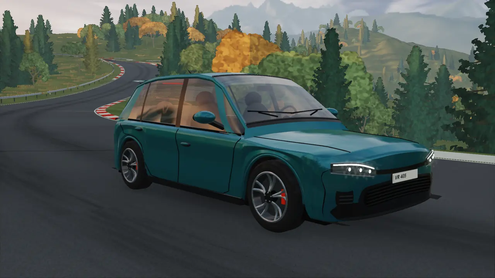
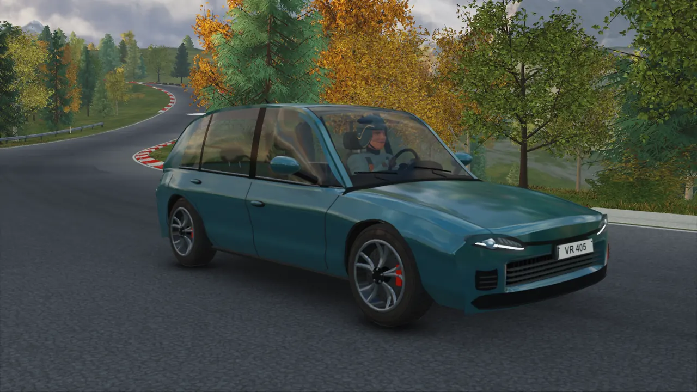
同じ固定カメラで撮った。運転者が乗り、紅葉の木と遠くの山が細かくなった。
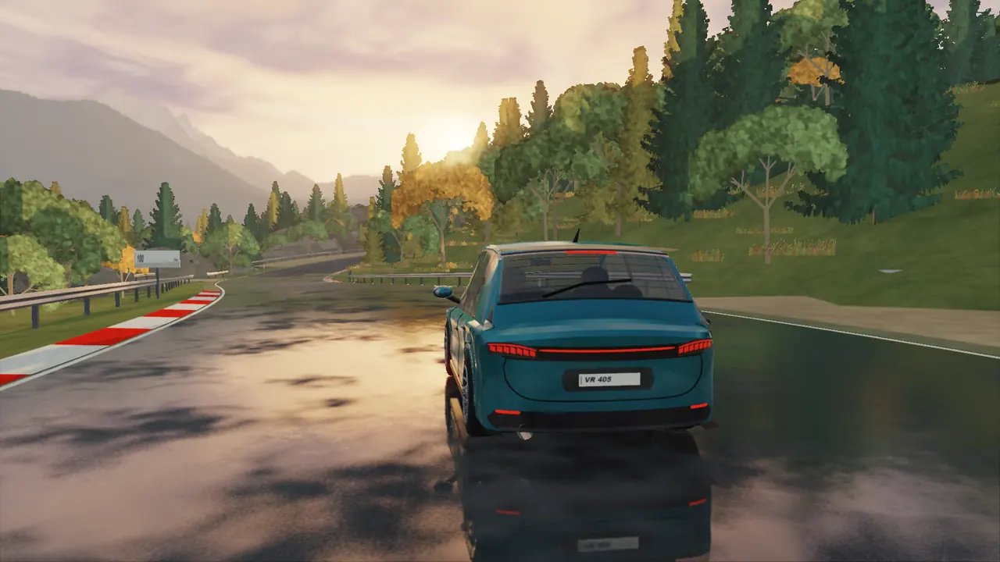
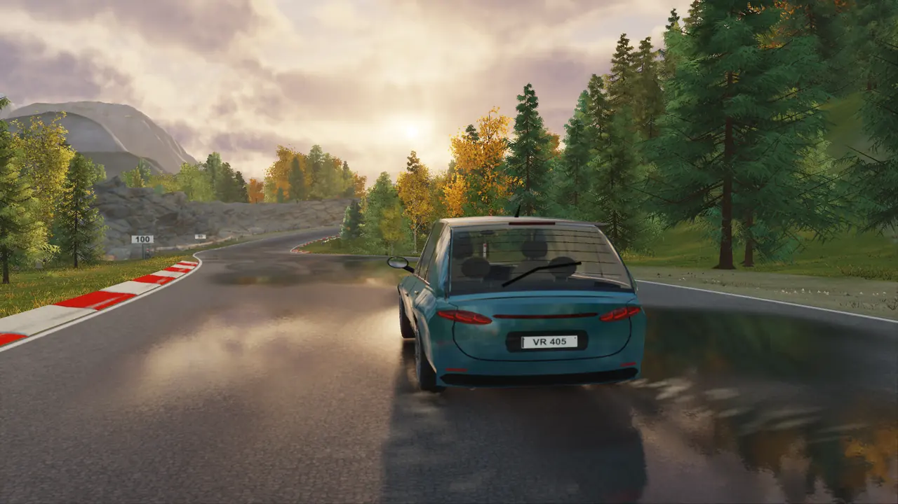
夕日に向かう濡れた路面。岩の切り通しと遠くの山が加わった。
回ごとの推移
| 回 | 作り直しの時間 | 作る係のトークン | 欠点（重い・中くらい・軽い） | GPU 平均・最大 | 大きさ |
|---|---|---|---|---|---|
| 第 1 回 | 71 分 | 255,269 | 7・14・6 | 1.44・12.32 ms | 88 KB |
| 第 2 回 | 70 分 | 492,149 | 6・14・7 | 2.22・9.04 ms | 125 KB |
| 第 3 回 | 67 分 | 370,560 | 6・16・6 | 1.97・11.27 ms | 160 KB |
| 第 4 回 | 71 分 | 398,603 | 6・16・10 | 3.05・6.55 ms | 184 KB |
| 第 5 回 | 62 分 | 482,865 | 6・15・7 | 4.91・12.85 ms | 205 KB |
GPU の時間は、1920×1080 で決まった運転を 60 秒走らせて測った値です（RTX 5060 Ti）。目標の「平均 11 ms 以下、最大 16.7 ms 以下」は 5 回とも満たし、操作のテスト 14 項目も 5 回とも合格しました。
- トークン: 作る係 1,999,446、点検係 1,237,957、合計 3,237,403
- 時間: 作り直しが 1 回 62〜71 分、点検が 6〜10 分、撮影と測定が 4〜5 分
- ChatGPT のプランの 5 時間の枠を 3 回使い切り、その後は残高（credits）を 2,120 使った
分かったこと
- 空・遠い山・観客席・岩の切り通しのような大きな物は、回を重ねるごとに目に見えて良くなった。スタートの直線の絵は、元の Opus 5.5 の版に近い水準になった。
- 木の葉・岩肌・水たまり・塗装・人の顔のように、細かい不規則さで質感を出す物は、5 回とも点検係に同じ欠点を指摘された。元の Fable 5.2 の版の細かさには届かなかった。
- Astra が自分で確かめて「直した」と書いても、点検係の目では直っていないことが続いた。直すたびに新しい欠点も生まれ、中くらい以上の件数は 21・20・22・22・21 と、ほとんど減らなかった。
- 指示書の決まり（ライブラリなし、1 ファイル、撮影と測定の窓口、速さの目標）は、最初の回から最後まで守った。
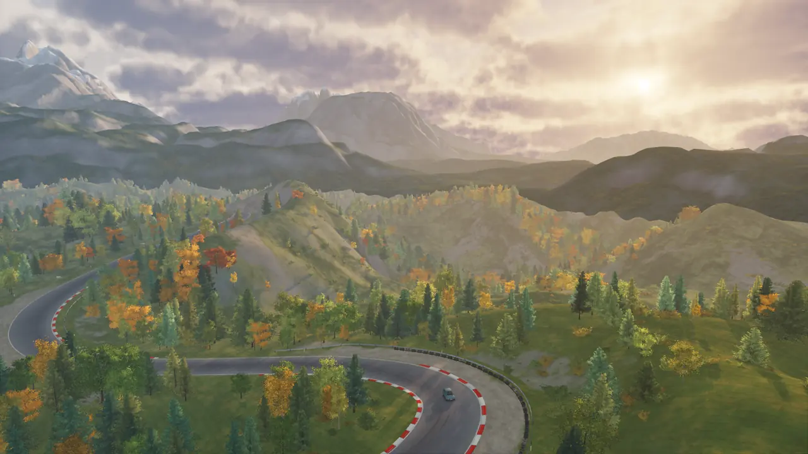
実験 2 コードを流用する夕暮れ峠サーキット
元の Fable 5.2 版のソースを写し、車・コース・時刻・画面の文字を差し替えて、別のゲームにしました。作業は Claude Opus 5.5 が行いました。元のソース約 8,100 行のうち、書き換えたのは 100 行ほどです。そのうち車・コース・時刻の差し替えは約 30 行でした。
ソースコード（GitHub）: 夕暮れ峠サーキットのソースのフォルダ、流用で元の版から変えた所（差分）
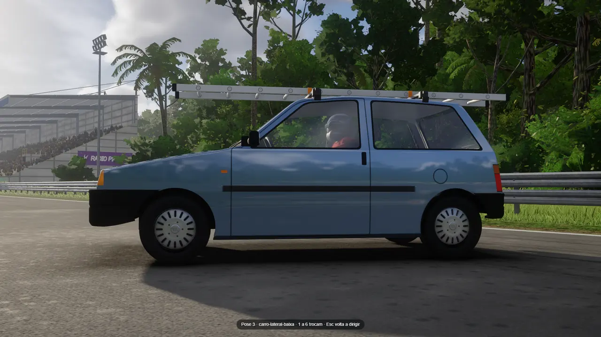
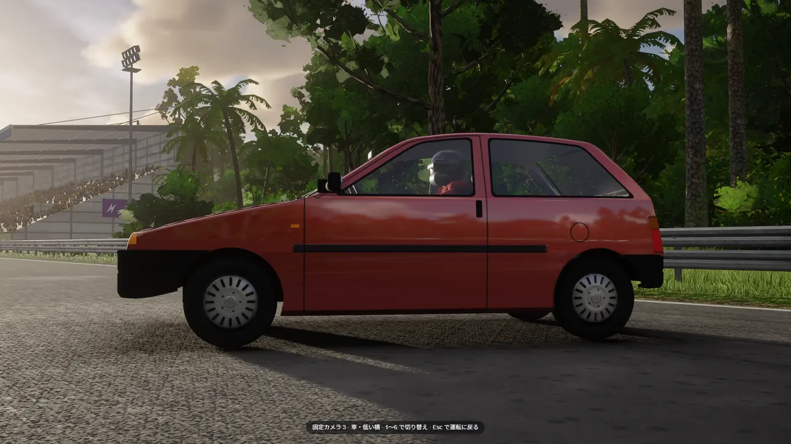
同じ固定カメラで撮った。車の色、屋根のはしご、車体の線、日の高さを変えた。
変えた所
| 変えた所 | やり方 | 行数 |
|---|---|---|
| コースの形 | 直線と曲がりの並びを、山の峠道の形に書き直した。ピット・木・看板・ガードレールは、元のコードがコースに合わせて自動で置く | 7 行 |
| 時刻 | 太陽の高さを 17° から 6° にして、夕暮れにした | 1 行 |
| 車 | 塗装を赤にし、屋根のはしごと荷台を外した。車体の横から見た線（ボンネット・窓・屋根・後ろ）を決める式の数値を変え、メーカーのエンブレムを外した | 約 20 行 |
| 決まった運転 | 性能の測定に使う 60 秒の運転を、新しいコースで自動運転させて記録し直した | データ 1 つ |
| 画面の文字と看板 | メニューと案内を日本語にした。看板は Canvas で日本語の文字を描き、広告 12 枚を架空の日本の店の名前にした | 約 65 行 |
| 上空の映像 | ?fly を付けて開くと、カメラがコースの上を飛び続ける | 22 行（新しいファイル） |
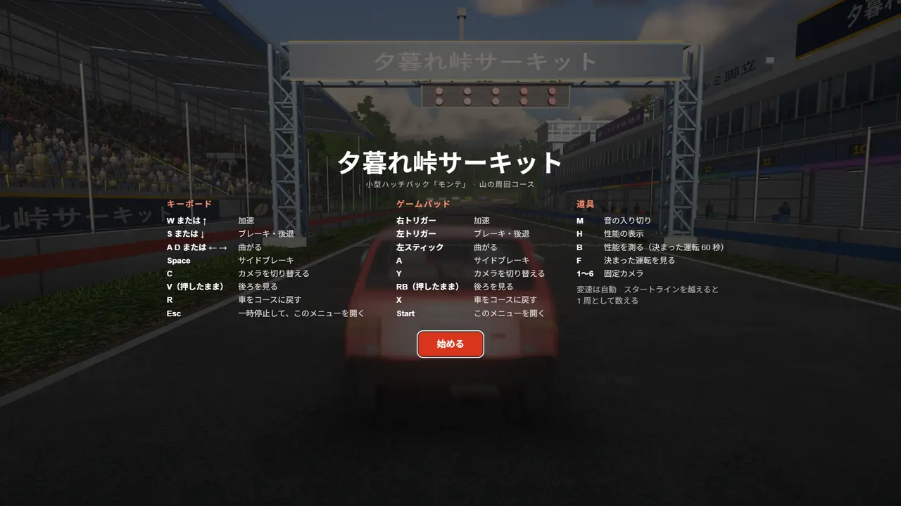
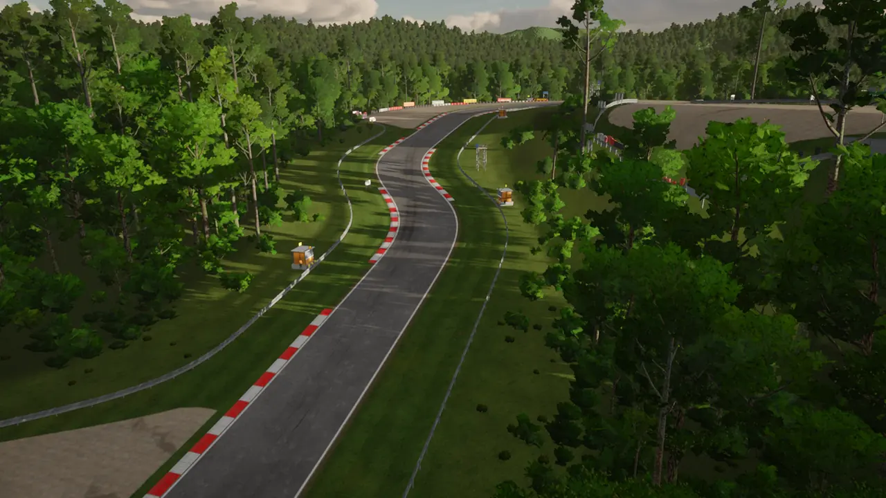
?fly）。峠道の形にしたコース分かったこと
- コースは、直線と曲がりを並べた表で決まる。長さを 2 か所空けておくと、コースが閉じる長さを自動で計算する。ピット・木・看板もコースに合わせて置かれるので、形を書き直すだけで走れるコースになった。
- 固定カメラ 6 か所と 60 秒の決まった運転で撮影・測定する仕組みが最初から入っていて、変えた結果をすぐに確かめられた。
一方で、次の限界があります。
- 車の形は、元の車に合わせて手で調整した数式でできている。柱やドアの位置は固定なので、まったく別の形の車にするには式を作り直す必要がある。今回もボンネットを低くしたため、前のライトの上端が少し飛び出して見える。
- 車体に書ける文字は、元のコードにある 16 文字の字形だけ。そのため車名は「MONTE」、番号は「MT-1961」にした。看板は Canvas の文字で描けるので、日本語も使える。
- 周回するコースを前提にした作りなので、峠を下る一本道などには作り替えが要る。
実験 3 3 つのモデルでブラッシュアップする
元の Fable 5.2 版を土台に、絵をよくして軽くしました。Claude Opus 5.5 が取りまとめ、GPT-6.2 Astra（4 本）が部分ごとの改良、Claude Fable 5.2 がレビューを受け持ちました。
ソースコード（GitHub）: ブラッシュアップした版のソースのフォルダ、ブラッシュアップで元の版から変えた所（差分）
画面の文字は元のポルトガル語のままです。始めるボタンは「Começar」です。公開にあたり、車体にある実在のメーカーの印（前のグリルの印と、後ろの文字の札 2 枚）を外しました。それ以外は実験の成果のままです。
速さと大きさ
| 1920×1080 | 2560×1440 | |
|---|---|---|
| 平均 | 9.61 → 6.60 ms | 12.90 → 8.62 ms |
| 99 パーセンタイル | 16.66 → 10.39 ms | 19.88 → 14.01 ms |
| 最大 | 24.73 → 15.40 ms | 24.79 → 17.20 ms |
| 16.7 ms を超えたコマ | 28 → 0 | 303 → 3 |
同じ GPU をほかの実験も使っていたので、改良前と改良後を交互に 3 回ずつ測り、中央値で比べました。1 回ずつの値は 1〜4 ms ぶれます。
- ファイルの大きさ: 626 KB → 220 KB
- 読み込み: 13.1 秒 → 10.4 秒
- 操作の自動テスト: 24 項目すべて合格
- 見た目の点検で数えた欠点（重い・中くらい・軽い）: 3・8・8 件 → 2・5・6 件
見た目の変化
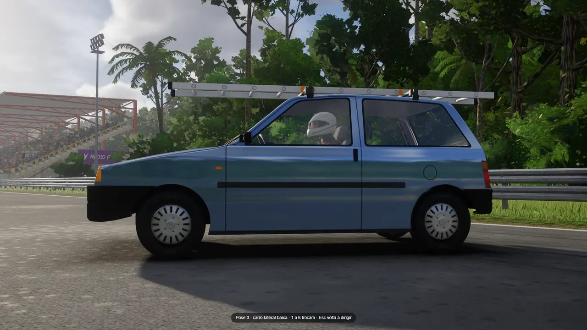
運転者が白いヘルメットの人の姿になり、奥の観客席が鉄骨と観客になった（Astra が担当）。
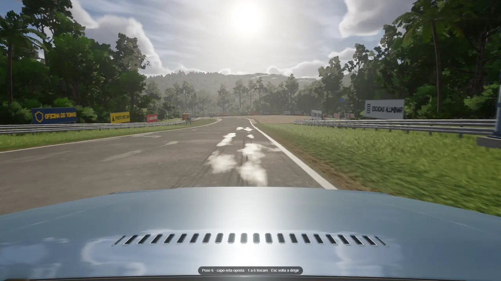
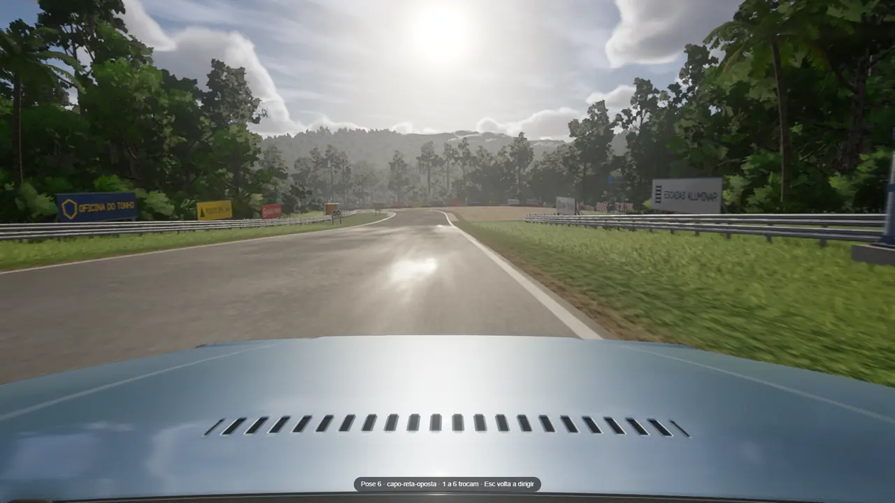
ボンネットのカメラで太陽に向かう場面。濡れた路面の白い斑点が、日の照り返しの帯になった（Astra が担当）。
軽くするために効いたこと
- 描く順番を決めて、重い地面を最後に描くようにした。地面の描画が 0.75〜1.4 ms から 0.2 ms に減った。
- 木と草（Astra が担当）は手前から描き、望遠のときに描く範囲に上限を付けた。木と草の描画が 3.1 ms から 2.1 ms に、起動時の組み立てが 4.5 秒から 2.9 秒に減った。
- 遠くの影 2 段を 1 コマおきに描き、映り込みと光の筋を計算する回数を減らした。
- コードを圧縮して HTML に埋め込み、開くときにブラウザーの標準機能（
DecompressionStream）で元に戻すようにした。
分担と使った量
| モデル | 受け持ち | 回数 | トークン |
|---|---|---|---|
| Claude Opus 5.5 | 取りまとめ。計画、測定の道具、描画の改良、組み込み、案を採るかどうかの判断 | ― | ― |
| GPT-6.2 Astra | 木と草・路面・車・観客席を 1 本ずつ | 4 本 | 929,300 |
| Claude Fable 5.2 | レビュー（最初・途中・最後） | 3 回 | 516,158 |
| Claude Opus 5.5（点検係） | 絵だけを見て欠点を数える。毎回別の担当 | 3 回 | 434,650 |
Fable のレビューからは、描く順番や影を 1 コマおきに描く案など、多くを採用しました。遠くの山の陰影が消える案など 3 件は、理由を記録したうえで採りませんでした。Astra の作業場所の中では Chrome が GPU を使えなかったので、撮影と測定は Opus が代わりに行いました。
残った欠点
- 車の塗装が樹脂の模型のように見える。映り込みの計算に近くの木が入っていないことが大きい。
- 逆光の場面の白いかすみと、板を重ねたように見える手前の木。
どちらも改良前からあり、今回は直せませんでした。
3 つの実験を比べて
| 実験 | できた物 | 使った量 | 分かったこと |
|---|---|---|---|
| 1. 作り方をまねる | ゼロから書いた別のゲーム（205 KB） | Astra 324 万トークン、作り直し 5 回で約 5 時間半 | 大きな物は回ごとに良くなる。細かい質感は、5 回では元の版に届かない |
| 2. コードを流用する | 元のコードの約 100 行を書き換えた別のゲーム（627 KB） | Opus 5.5 の 1 つのセッションの中で作った（量は測っていない） | 少ない書き換えで別のゲームになる。車の形の作りと、ライセンスに縛られる |
| 3. ブラッシュアップ | 元の版を軽くし、絵の一部を良くした版（220 KB） | Fable 52 万・Astra 93 万・点検係 43 万トークン | 軽くする効果は大きい（GPU の時間が約 3 割減）。見た目の欠点は一部しか直らない |
点検係が違う（実験 1 は Astra、実験 3 は Opus 5.5）ので、欠点の件数は実験どうしでは比べられません。GPU の時間も、場面と測り方が違うので、そのままでは比べられません。
ライセンス
実験 2 と実験 3 のゲームは、ViktorKav さんの「Uno com escada」を改変したものです。元の作品のライセンス（PolyForm Noncommercial 1.0.0）に従い、非営利で公開しています。実験 1 のゲーム（drive.html）は、元のコードを使わずに Astra が書いたものです。
Required Notice: Copyright (c) 2026 ViktorKav (https://github.com/viktorkav/uno-com-escada)
実験 2 と実験 3 のソースのフォルダ（reports/uno/src/）にも、元の作品のライセンスの本文を入れています。差分は、元の Fable 5.2 版のソース（orig）と比べたものです。フォルダの中で次のコマンドを実行すると、このページで遊べる版と同じファイルができます（2026-11-20 に、1 バイトも違わないことを確かめました）。
- 流用した版:
node build.mjs --src . --out reuse.html - ブラッシュアップした版:
node build.mjs --src . --min --pack --out polish.html